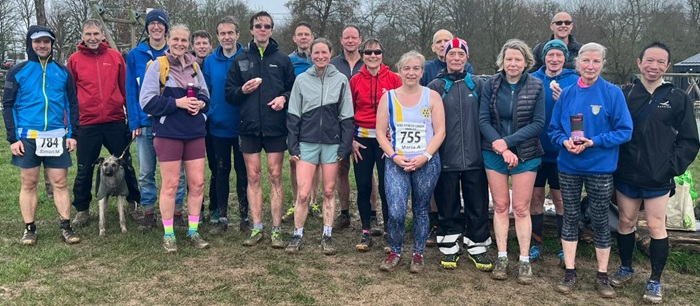

423 runners from the 18 registered cross-country Clubs in Kent arrived for an early morning start in Mote Park for the final race in the 2025/26 season, writes Jim Knight.
It was an emotional start with a one-minute applause for Sevenoaks AC athlete Pauline Dalton who passed away on Thursday February 12th at the age of 61. Pauline was one of the club’s star athletes – a 5 times winner of her class in the Kent Fitness League. As captain of the SAC women’s team, she led the team to league victories in 2019-20, 2021-22 and twice more to runner's up positions.
She will be sadly missed by all her friends in Kent Fitness League, and in Sevenoaks AC.
After weeks of rain, the park was super-muddy. It was a day for Walsh studs or Mudclaws. Runners with road shoes or light trail shoes skated and slithered around the course. At 9 am we started, but after about 2km a marshal misdirected the leaders. Some followed them and some took the correct route. The organisers stopped the race and we all went back to the start for a re-start.
Despite the course being slightly shortened for the second start, it was a long tiring route through the incessant mud. There were tired legs and muddy bodies by the time we reached the finish.
The race was won by 25-year-old James Rolls from Dartford Harriers, 15 seconds ahead of Kieran O’Doherty of Petts Wood Runners. With several of the SAC men missing through illness and injury, it was, once again the SAC women who excelled.
Women’s team captain Caroline Fenwick placed 7th (2nd W45), Nicola Glover 10th (2nd W35-39) and Sophie Day 15th (3rd W35-39). The other members of the scoring team were Heather Fitzmaurice in 22nd (2nd W55) and Anna O’Donovan (28th). Sally Shewell ran well again to come 3rd in W65. The women’s team came 2nd and secured runner’s up position in the series. Another outstanding performance from a team heavily out-numbered by some of the bigger clubs.
In the 7-race series, Caroline Fenwick was 2nd W45, Nicola Glover 3rd W35–39, Sophie Day 4th W35–39, Heather Fitzmaurice 3rd W55, Jane Wiley was 2nd W65 and Sally Shewell 3rd W65.
In the men’s race, the fastest SAC athlete was Andrew Hutchinson in 28th place just 4 minutes adrift of the leader, followed by Dan Witt in 38th, Seb Naughton in 51st and Brian Allen (66th). The other members of the scoring team were Yon Marsh (75th), Graham Dwyer (84th), Adam Bates (87th) and Andrew Bradley(98th). Once again there were some fine performances from our vets, with Jeremy Winter 3rd M70 and Yon Marsh 3rd M65.
In the series, Keith Dowson was placed 2nd M60, Neil Colvin 3rd M65, and Jeremy Winter 3rd M70. On the day, the men’s team came 8th but remained 5th in the series. The combined team remained in 3rd place in the series.
The full SAC results were:
| Ov Pos | Lg Pos | Bib | Runner | Age | Time | Club | Score | Rtg | # |
|---|---|---|---|---|---|---|---|---|---|
| 28 | 28 | 775 | Andrew Hutchinson | 46 | 34:39 | Sevenoaks AC | V40:1 | 89.96 | 34 |
| 40 | 38 | 801 | Daniel Witt | 51 | 36:06 | Sevenoaks AC | V50:1 | 86.25 | 85 |
| 57 | 7 | 768 | Caroline Fenwick | 48 | 37:17 | Sevenoaks AC | V45 | 96.13 | 20 |
| 58 | 51 | 787 | Sebastian Naughton | 51 | 37:21 | Sevenoaks AC | V50:2 | 81.41 | 25 |
| 68 | 10 | 771 | Nicola Glover | 38 | 38:27 | Sevenoaks AC | V35 | 94.19 | 26 |
| 78 | 66 | 752 | Brian Allen | 54 | 39:14 | Sevenoaks AC | V40:2 | 75.84 | 18 |
| 88 | 15 | 762 | Sophie Day | 37 | 39:45 | Sevenoaks AC | F1 | 90.97 | 10 |
| 91 | 75 | 1074 | Yon Marsh | 66 | 39:57 | Sevenoaks AC | V60 | 72.49 | 17 |
| 103 | 84 | 1035 | Graham Dwyer | 53 | 40:35 | Sevenoaks AC | M1 | 69.14 | 27 |
| 106 | 87 | 757 | Adam Bates | 42 | 40:40 | Sevenoaks AC | M2 | 68.03 | 18 |
| 112 | 22 | 769 | Heather Fitzmaurice | 56 | 41:00 | Sevenoaks AC | V55 | 86.45 | 91 |
| 121 | 98 | 1103 | Andrew Bradley | 61 | 41:37 | Sevenoaks AC | M3 | 63.94 | 5 |
| 142 | 118 | 754 | Andrew Ashlee | 56 | 42:32 | Sevenoaks AC | NS | 56.51 | 40 |
| 161 | 135 | 780 | Leonard Lai King | 46 | 43:41 | Sevenoaks AC | NS | 50.19 | 26 |
| 166 | 28 | 789 | Anna O'Donovan | 25 | 44:01 | Sevenoaks AC | F2 | 82.58 | 8 |
| 191 | 156 | 800 | Jeremy Winter | 72 | 45:46 | Sevenoaks AC | NS | 42.38 | 22 |
| 194 | 159 | 774 | Simon Hallpike | 72 | 46:02 | Sevenoaks AC | NS | 41.26 | 65 |
| 204 | 168 | 784 | Simon Mann | 45 | 46:26 | Sevenoaks AC | NS | 37.92 | 10 |
| 249 | 60 | 793 | Sarah Shewell | 66 | 49:16 | Sevenoaks AC | NS | 61.94 | 139 |
| 260 | 66 | 798 | Jane Wiley | 68 | 49:50 | Sevenoaks AC | NS | 58.06 | 5 |
| 281 | 76 | 5152 | Clare Ambrose | 57 | 51:24 | Sevenoaks AC | NS | 51.61 | 7 |
| 282 | 77 | 792 | Sarah Philpott | 47 | 51:26 | Sevenoaks AC | NS | 50.97 | 13 |
| 317 | 231 | 778 | Jim Knight | 74 | 54:06 | Sevenoaks AC | NS | 14.50 | 9 |
| 377 | 122 | 755 | Maria Ashlee | 54 | 1:02:49 | Sevenoaks AC | NS | 21.94 | 9 |
| 390 | 263 | 1149 | James Graham | 72 | 1:05:23 | Sevenoaks AC | NS | 2.60 | 27 |
| 423 | 268 | 770 | James Fitzmaurice | 83 | 1:20:00 | Sevenoaks AC | NS | 0.74 | 74 |
The full results are here.
At the end of the race, SAC runners were greeted with a veritable feast of cakes – a club tradition – as members vied for the coveted “silver whisk” for the best cakes at the finish. A great reward for a long hard slog through the mud.

Dan Witt, men’s team captain said “Today was a poignant day to remember Pauline and we all raced in her memory. We also marked the occasion with a fantastic array of cakes that Caroline will have the unenviable task of judging the best. My vote goes to Duncan's famous brownies! Congratulations to the women's team retaining their "perennial runner's up" prize and to everyone who took part in any or all of the races and a massive thank you to everyone who helped organise our race in Knole.”
Caroline Fenwick, women’s team captain added “Today the team came together to remember and celebrate our wonderful team captain Pauline; her warmth, supportive nature, positive mindset and team spirit will be greatly missed by all. The ladies enjoyed their final race of the season, their excellent effort and performance throughout the season resulting in 2nd place.”